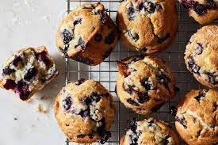

Bluebarry Muffins

Description:
Muffins for breakfast are the best. Basically a cupcake but made slightly
healthier so you can justify having dessert for breakfast. Add blueberries
for antioxidants and you are set for a good and tasty day.
Cook Time: 40 mins
Additional Time: 35 mins
Total Time: 1 hr 15 mins
Servings: 12
Ingredients:
- 2 ½ cups plus 2 tablespoons all-purpose flour
- 1 tablespoon baking powder
- 2 cups fresh blueberries
- 1 cup buttermilk
- ¼ cup sour cream
- 2 teaspoons pure vanilla extract
- 2 teaspoons kosher salt
- Nonstick cooking spray
- 10 tablespoons unsalted butter, room temperature
- 1 ¼ cup granulated sugar
- 1 teaspoon finely grated lemon zest
- 1 large egg
- 2 large egg yolks
- 3 tablespoons raw sugar
Directions:
- Gather all ingredients.
- Whisk together 2 ½ cups of the flour and the baking powder
in a medium bowl until completely combined. Toss 1 ½ cups of
the blueberries with the remaining 2 tablespoons flour in a medium
bowl until completely coated. Whisk together the buttermilk, sour cream,
vanilla and salt in a large measuring cup until smooth.
- Arrange a rack in the center of the oven and preheat to 425 degrees F.
Spray the top of a 12-cup muffin tin with nonstick spray and line with
standard cupcake liners. (It's important to spray the top of the pan because
the muffin tops will stick to the pan if you don't.)
- Beat the butter, granulated sugar and lemon zest with an electric mixer on
medium-high speed until light and fluffy, occasionally scraping down the
sides and bottom of the bowl, 3 to 4 minutes. Add the egg and yolks and
continue beating until fully incorporated, about 2 minutes.
- With the mixer on low, add the dry ingredients in 3 additions,
alternating with the wet ingredients in 2 additions, beginning and
ending with the dry ingredients. Fold in the blueberries until evenly
distributed (be careful not to overmix).
- Divide the batter evenly among the prepared muffin cups with a heaping
⅓ cup per muffin. Top the batter with the remaining ½ cup blueberries,
gently pressing to adhere (you should have 4 to 5 berries per muffin).
Sprinkle with the raw sugar.
- Bake the muffins, rotating the pan halfway through, until a tester
inserted into the center comes out clean, 25 to 30 minutes. Transfer
the pan to a wire rack and let the muffins cool in the pan for 5 minutes.
Then remove the muffins onto the wire rack to cool completely.
- Note:When measuring flour, we spoon it into a dry
measuring cup and level off excess. (Scooping directly from the bag
compacts the flour, resulting in dry baked goods.) We developed this
recipe using 2 teaspoons Diamond Crystal kosher salt, which has larger
flakes than fine table salt and is less “salty.” If you are using fine
table salt, use just 1 teaspoon.
Nutrition Facts:
(per serving)
| Calories | 336 |
| Fat | 14g |
| Carbs | 49g |
| Protein | 5g |